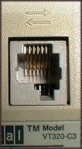
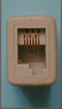

The VT320 terminal has three serial connections on the back. There are two 6-pin MMJ connections, and a 25-way D-type connector. Some U.S. models of the VT320 don't have the 25-way D-type. This document describes these connectors.
The VT320 has two MMJ connectors, one for host connections, marked with two arrows, and one for printers with serial interfaces. These connections are physically and electrically identical.
 The leftmost picture shows the host connector on the back of the VT320. The printer connector is identical (though the icon above is different). The picture on the right shows a Digital H8572 adapter end-on. This adapter has two MMJs, for joining lengths of terminal cable. Despite the difference in appearance, they both receive the same shape plugs.
The MMJ and its complementary connector, the Modified Modular Plug (MMP), have an offset tab at the bottom to make sure that they can't be confused with U.S. telephone connections, which have a centred tab. Telephone connections in the U.K. use sockets which are different from both the U.S. design and the MMJ.
The pins in these sockets are numbered from pin 1 on the left to pin 6 on the right.
Digital designates the electrical interface as DEC-423. This is a superset of the EIA RS-423-A standard[1], with better filtering and tighter level tolerances. Digital claim reliable data communication with unshielded cables over much greater distances than EIA-232 allows, typically 300m. DEC-423 is compatible with EIA-232 interfaces for connections employing data lines only.
The signals on these pins are described in the table below, lifted directly from EK-VT320-UU-001, Installing and Using the VT320 Video Terminal.
| Pin | Signal | Mnemonic | Description |
|---|---|---|---|
| 1 | Data terminal ready | DTR | From VT320 When on, tells the modem or printer that the VT320 is ready to send or receive. |
| 2 | Transmitted data | TXD+ | From VT320 Sends serial characters. Held in the mark state (-) when characters are not being sent. In modem control modes, sends data only when DSR and DTR signals are on. |
| 3 | Transmit signal ground | TDX- | Provides the common ground reference potential for transmitted signals TXD+ and DTR. |
| 4 | Receive signal ground | RXD- | Provides the common ground reference potential for received signals RXD+ and DSR. |
| 5 | Received data | RXD+ | To VT320 Receives serial characters. |
| 6 | Data set ready | DSR | To VT320 For the comm line: When on, tells the VT320 that the modem is in the data mode and is ready to communicate. For the printer line: Receives DTR on this line. If DSR is present at power-up, the printer controls print operations. If DSR is not present at power-up, the terminal checks for DSR before each print operation. |
The VT320 provides a second host connector. The Communications Set-Up page has a setting called Host Port Selection which allows use of either the MMJ or this port. The VT320 is a single-session terminal, so only one can be used at a time, though the MMJ printer connector can be used with either type of host connector selected.
The second host connector is provided on VT320s is a male 25-way D-type subminiature connector.
This interface operates in accordance with EIA RS232-C. The table below is also taken directly from Installing and Using the VT320 Video Terminal.
| Pin | Signal | Mnemonic | EIA/CCITT/DIN | Description |
|---|---|---|---|---|
| 2 | Transmitted data | TXD | BA/103/D1 | From VT320 Sends serial characters. Held in mark state when characters are not being sent. In modem control modes, sends data only when RTS, CTS, DSR, and DTR signals are on. |
| 3 | Received data | RXD | BB/104/D2 | To VT320 Receives serial characters. In modem control modes, ignores characters if RLSD signal is off. |
| 4 | Request to send | RTS | CA/105/S2 | From VT320 When on, places the modem in transmit mode. |
| 5 | Clear to send | CTS | CB/106/M2 | To VT320 When on, tells the VT320 that the modem is ready to send. |
| 6 | Data set ready | DSR | CC/107/M1 | To VT320 When on, tells the VT320 that the modem is in data mode and is ready to exchange RTS, CTS and RLSD signals. |
| 7 | Signal ground | SGND | AB/102/E2 | Serves as common ground reference potential for all connector signals, except protective ground. |
| 8 | Receive line signal detect (carrier detect) | RLSD | CF/109/M5 | To VT320 When on, tells the VT320 that the signal received on the communication line is good enough to ensure correct demodulation of received data. When off, indicates no signal received, or signal is unsuitable for demodulation. |
| 12 | Speed indicator | SPDI | CI/112/M4 | To VT320 When on, enables a modem to control the terminal's transmit and receive speeds. Sets the speed to 1200 bits per second, regardless of set-up selection. |
| 20 | Data terminal ready | DTR | CD/108.2/S1.2 | From VT320 When on, tells the modem that the terminal is ready to send or receive. |
| 23 | Speed select | SPDS | CH/111/S4 | From VT320 When on, tells the modem that the receive speed selected in set-up is greater than 600 bits per second. |
1 The Telecommunications Industry Association (TIA) web site is the place to look for the latest versions of EIA/TIA standards. At the time of writing (October 1998), the latest versions of EIA-232 and EIA-423 were:
EIA was the Electronic Industries Alliance, until ceasing operations in 2011.